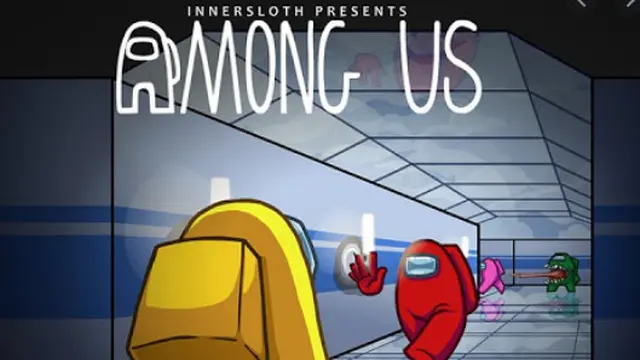
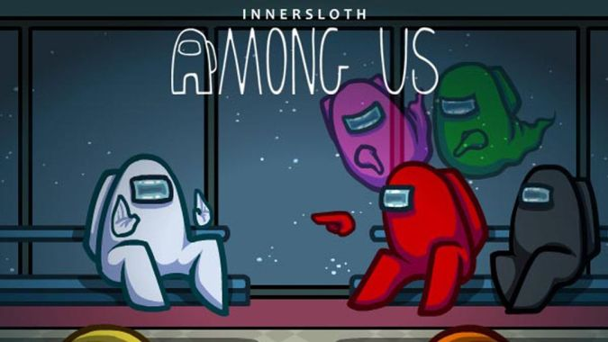

Aturan main
Tiap ronde permainan di Among Us bisa diisi hingga 10 pemain, dengan setting tempat di sebuah pesawat. Dari 10 orang yang berpartisipasi, barulah sistem bakal memilih secara acak siapa yang akan menjadi crewmate dan siapa akan yang menjadi impostor. Sehingga, peran mereka masing-masing tetap dirahasiakan. Sistem sendiri mengizinkan jumlah impostor maksimal ada 3, sedangkan sisanya adalah crewmate.
Nah, masing-masing crewmate memiliki misi untuk memperbaiki dan melindungi pesawat dari segala kerusakan yang diakibatkan sang impostor. Crewmate juga diwajibkan untuk selalu waspada dan melihat gerak-gerik pemain lain yang bisa saja ternyata seorang impostor. Sebab, impostor memiliki sebuah kemampuan untuk membunuh crewmate dan menendangnya keluar dari permainan. Agar bisa menang, crewmate harus menetralisasi pesawat dari seluruh impostor. Sementara dari sisi impostor, mereka harus berhasil membunuh dan mengelabui seluruh crewmate yang ada agar bisa menguasai pesawat yang mereka tumpangi.

Di titik tertentu, semua pemain yang ada, baik itu crewmate maupun impostor, bisa menggelar sebuah diskusi untuk menuduh seseorang yang dicurigai sebagai impostor dengan cara voting. Pemain yang mendapatkan jumlah tuduhan terbanyak lantas bakal ditendang dari pesawat, entah itu crewmate atau impostor. Pada sesi diskusi ini, pemain bisa menggunakan fitur chat untuk meyakinkan pemain lainnya siapa yang bakal ditendang dari pesawat.

Sehingga, kerja sama tim memang benar-benar dibutuhkan agar tidak salah pilih orang, apabila mereka crewmate. Adapun tugas impostor adalah menyamar serta menipu crewmate dengan segala trik agar mereka tidak dituduh dan ditendang dari pesawat.
Adapun tugas impostor adalah menyamar serta menipu crewmate dengan segala trik agar mereka tidak dituduh dan ditendang dari pesawat.